UDN
Search public documentation:
LandscapeEditingKR
English Translation
日本語訳
中国翻译
Interested in the Unreal Engine?
Visit the Unreal Technology site.
Looking for jobs and company info?
Check out the Epic games site.
Questions about support via UDN?
Contact the UDN Staff
日本語訳
中国翻译
Interested in the Unreal Engine?
Visit the Unreal Technology site.
Looking for jobs and company info?
Check out the Epic games site.
Questions about support via UDN?
Contact the UDN Staff
랜드스케이프 터레인 편집하기
문서 변경내역: 잭 포터 작성. Jeff Wilson 업데이트. 홍성진 번역.
개요
 Editing 부분에서는 레벨 내 모든 랜드스케이프에서 편집할 랜드스케이프를 선택할 수 있으며, 편집 툴, 브러시, and 타겟 레이어 를 열어볼 수 있습니다. 이 모든 것이 단순하고 직관적인 랜드스케이프 편집을 위해 어우러집니다. 편집 툴은 랜드스케이프에 할 작업을 결정합니다. 브러시는 선택된 툴이 영향을 끼칠 랜드스케이프 영역을 결정합니다. 타겟은 툴이 랜드스케이프의 어느 부분에 영향을 끼칠지를 결정하는데, 하이트맵 또는 텍스처 레이어가 될 수도 있습니다.
Editing 부분에서는 레벨 내 모든 랜드스케이프에서 편집할 랜드스케이프를 선택할 수 있으며, 편집 툴, 브러시, and 타겟 레이어 를 열어볼 수 있습니다. 이 모든 것이 단순하고 직관적인 랜드스케이프 편집을 위해 어우러집니다. 편집 툴은 랜드스케이프에 할 작업을 결정합니다. 브러시는 선택된 툴이 영향을 끼칠 랜드스케이프 영역을 결정합니다. 타겟은 툴이 랜드스케이프의 어느 부분에 영향을 끼칠지를 결정하는데, 하이트맵 또는 텍스처 레이어가 될 수도 있습니다.
랜드스케이프 편집 모드
 랜드스케이프 편집 모드가 켜 지면 에디터의 원근 뷰포트에 실시간 업데이트도 켜 집니다.
랜드스케이프 편집 모드가 켜 지면 에디터의 원근 뷰포트에 실시간 업데이트도 켜 집니다.
-landscapeedit 명령줄 파라미터를 지정하지 않으면 숨겨집니다.
랜드스케이프 선택
 목록에서 랜드스케이프를 선택하면 활성 랜드스케이프가 됩니다. 이후의 편집 기능은 그 랜드스케이프에 적용됩니다.
목록에서 랜드스케이프를 선택하면 활성 랜드스케이프가 됩니다. 이후의 편집 기능은 그 랜드스케이프에 적용됩니다.
툴
| 공통 콘트롤 | 작업 |
|---|---|
| Ctrl + 왼쪽 버튼 | 하이트맵이나 선택된 레이어에 선택된 툴의 효과를 적용하는 스트로크입니다. |
| Ctrl + Z | 지난 스트로크를 되돌립니다. |
| Ctrl + Y | 지난 되돌리기를 다시합니다. |
페인트 툴
아래는 선택된 브러시를 사용하는 하이트맵이나 레이어 위에 "칠하는" 데 사용되는 툴입니다.페인트
하이트맵에서 작업할 때, 이 툴은 현재 선택된 브러시와 감쇠 모양대로 하이트맵의 높이나 레이어 웨이트를 늘이거나 줄입니다.| 대체 콘트롤 | 작업 |
|---|---|
| Ctrl + Shift + 왼쪽 버튼 | 하이트맵이나 선택된 레이어의 웨이트를 줄입니다. |
| 옵션 | 설명 |
|---|---|
| Total Strength (총 세기) | 각 브러시 스트로크 효과의 세기를 조절합니다. |
스무드 (Smooth)
이 툴은 하이트맵이나 레이어 웨이트를 부드럽게 합니다. 세기는 부드럽게 하는 양을 결정합니다. 하이트맵 스무딩 (마우스를 올리면 이전/이후 비교)


| 옵션 | 설명 |
|---|---|
| Total Strength 총 세기 | 각 브러시 스트로크마다 발생하는 스무딩 정도를 조절합니다. |
| Detail Smooth 디테일 스무드 | 체크하면 지정된 디테일 스무딩 값을 사용하여 디테일을 보존하는 스무딩을 합니다. 스무딩 값이 클 수록 더 많은 디테일이 제거되며, 작을 수록 더 많이 보존됩니다. |
| (마우스를 올리면 이전/이후 비교) 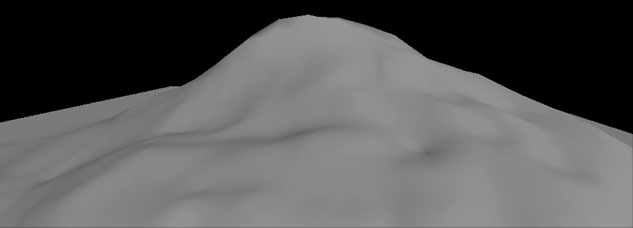 | |
플래튼 (Flatten)
하이트맵에서 작업할 때, 이 툴은 처음 툴을 활성화시켰을 때 마우스 커서 아래의 랜드스케이프 레벨로 지형을 플래튼(평평화)시킵니다. (마우스를 올리면 이전/이후 비교)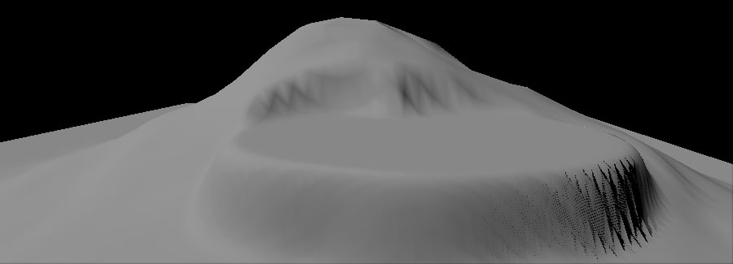
| 옵션 | 설명 |
|---|---|
| Total Strength 총 세기 | 선택된 레이어에 설정할 웨이트로, 1.0 은 레이어의 불투명도 100% 값입니다. |
침식 (Thermal Erosion, 열성 침식)
 이 툴은 열성 침식 시뮬레이션을 사용하여 하이트맵의 높이를 조절합니다. 높은 지대에서 낮은 지대로의 토양 침식 작용을 흉내냅니다. 고도 차이가 심할 수록 발생하는 침식량도 많아집니다. 원한다면 침식면 꼭대기에 노이즈 이펙트를 적용하여 좀 더 자연스런 모습을 낼 수도 있습니다.
(마우스를 올리면 이전/이후 비교)
이 툴은 열성 침식 시뮬레이션을 사용하여 하이트맵의 높이를 조절합니다. 높은 지대에서 낮은 지대로의 토양 침식 작용을 흉내냅니다. 고도 차이가 심할 수록 발생하는 침식량도 많아집니다. 원한다면 침식면 꼭대기에 노이즈 이펙트를 적용하여 좀 더 자연스런 모습을 낼 수도 있습니다.
(마우스를 올리면 이전/이후 비교)

| 옵션 | 설명 |
|---|---|
| Total Strength 총 세기 | 각 브러시 스트로크의 세기를 조절합니다. |
| Threshold 한계치 | 침식 효과를 적용하기 위해 필요한 최소 높이차입니다. 값이 작을 수록 적용되는 침식량도 많아집니다. |
| Surface Thickness 표면 두께 | 레이어 웨이트 침식 효과에 대한 표면 두께입니다. |
| Iteration Num 반복처리 횟수 | 반복처리를 한 횟수입니다. 값이 클 수록 침식 수준도 커 집니다. |
| Erosion Effects Filter 침식 효과 필터 | |
| Subtraction 빼기 | 하이트맵을 낮추기만 하는 침식 효과만 적용합니다. |
| Both 둘다 | 하이트맵을 높이거나 낮추는 침식 효과 전부를 적용합니다. |
| Addition 더하기 | 하이트맵을 높이는 침식 효과만 적용합니다. |
 | |
| Noise Scale 노이즈 스케일 | 사용된 노이즈 필터의 크기입니다. 노이즈 필터는 위치와 스케일에 관계되어 있는데, Noise Scale 을 변경하지만 않으면 같은 필터가 같은 위치에 몇 번이고 적용된다는 뜻입니다. |
수성 침식 (Hydraulic Erosion)
 이 툴은 수성, 물로 인한 침식 시뮬레이션을 사용하여 하이트맵의 높이를 조절합니다. 처음 비를 뿌릴 지역을 결정하는 데는 노이즈 필터가 사용됩니다. 그 후 계산을 통해 처음 비가 내린 지역에서부터 물이 흘러내리며 용해되고 운반하며 증발되는 과정을 흉내냅니다. 그 계산 결과가 하이트맵을 실제로 낮추는 데 사용되는 값입니다.
(마우스를 올리면 이전/이후 비교)
이 툴은 수성, 물로 인한 침식 시뮬레이션을 사용하여 하이트맵의 높이를 조절합니다. 처음 비를 뿌릴 지역을 결정하는 데는 노이즈 필터가 사용됩니다. 그 후 계산을 통해 처음 비가 내린 지역에서부터 물이 흘러내리며 용해되고 운반하며 증발되는 과정을 흉내냅니다. 그 계산 결과가 하이트맵을 실제로 낮추는 데 사용되는 값입니다.
(마우스를 올리면 이전/이후 비교)

| 옵션 | 설명 |
|---|---|
| Total Strength 총 세기 | 각 브러시 스트로크의 세기를 조절합니다. |
| Rain Amount 강우량 | 표면에 적용할 비의 양입니다. 값이 클 수록 침식량도 늘어납니다. |
| Sediment Cap. 퇴적 제한량 | 물이 운반할 수 있는 퇴적량입니다. 값이 클 수록 침식량도 늘어납니다. |
| Iteration Num 반복처리 횟수 | 반복처리한 횟수입니다. 값이 클 수록 침식 레벨도 높아집니다. |
| Rain Distribution Filter 강우 분포 필터 | |
| Both 둘다 | 노이즈 필터가 양성인 부분에만 비가 적용됩니다. |
| Addition 더하기 | 전체 영역에 비가 적용됩니다. |
 | |
| Rain Dist. Scale 강우 분포 스케일 | 표면의 초기 강우지역에 적용할 노이즈 필터 크기입니다. 노이즈 필터는 위치와 스케일에 관련되어 있는데, Rain Dist. Scale 을 바꾸지 않는 다면 같은 필터가 같은 위치에 몇 번이고 적용된다는 뜻입니다. |
| Detail Smooth 디테일 스무드 | 체크하면 지정된 디테일 스무딩 값을 사용하여 침식 효과에 디테일을 보존하는 스무딩 작업을 합니다. 스무딩 값이 클수록 디테일 제거량도 늘어나는 반면, 작을수록 디테일 보존량이 늘어납니다. |
노이즈
하이트맵이나 레이어 웨이트에 노이즈 필터를 적용합니다. 세기는 노이즈 양을 결정합니다.| 옵션 | 설명 |
|---|---|
| Total Strength 총 세기 | 각 브러시 스트로크의 세기를 조절합니다. |
| Noise Effects Filter 노이즈 효과 필터 | |
| Both 둘다 | 모든 노이즈 이펙트를 적용합니다. |
| Addition 더하기 | 하이트맵을 올리는 노이즈 이펙트만 적용합니다. |
| 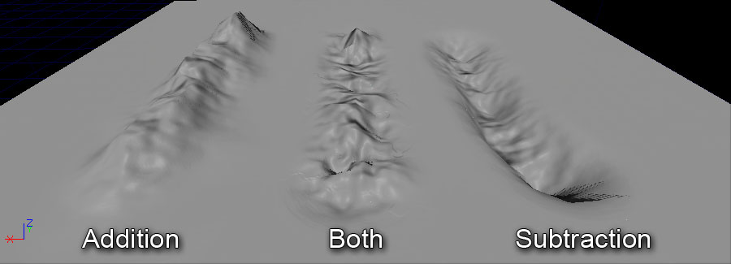 | |
| Subtraction 빼기 | 하이트맵을 내리는 노이즈 이펙트만 적용합니다. |
| Noise Scale 노이즈 스케일 | 사용된 펄린(perlin) 노이즈 필터의 크기입니다. 노이즈 필터는 위치와 스케일에 관련되어 있는데, Noise Scale 을 바꾸지 않는다면 같은 필터가 같은 위치에 몇 번이고 적용된다는 뜻입니다. |
컴포넌트 툴
아래 설명하는 툴은 현재 랜드스케이프의 컴포넌트 수준에서 작동합니다.컴포넌트 선택
랜드스케이프 컴포넌트를 한 번에 하나씩 선택한 다음 다른 툴을 조합해서 쓸 때, 이를테면 컴포넌트를 스트리밍 레벨로 옮긴 다음 컴포넌트를 지우는 것과 같은 작업을 할 때 쓰는 툴입니다.| 대체 콘트롤 | 작업 |
|---|---|
| Ctrl + Shift + 마우스 왼쪽 버튼 | 커서 아래 있는 컴포넌트를 선택 해제합니다. |
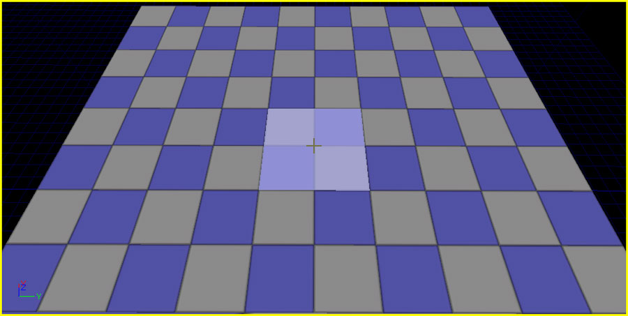
컴포넌트가 선택되면 빨갛게 그늘집니다: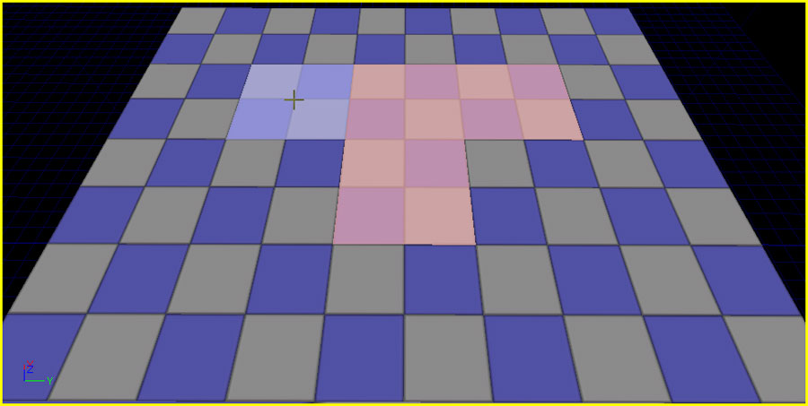
- Clear Component Selection 컴포넌트 선택 비우기
- 현재 선택된 컴포넌트를 비웁니다.
랜드스케이프 컴포넌트 새로 추가
현재 랜드스케이프에대한 컴포넌트를, 한 번에 하나씩 새로 만드는 툴입니다. 랜드스케이프 컴포넌트 추가 툴이 활성화되면, 컴포넌트를 새로 추가할 수 있는 커서 위치에 녹색 와이어프레임이 나타납니다: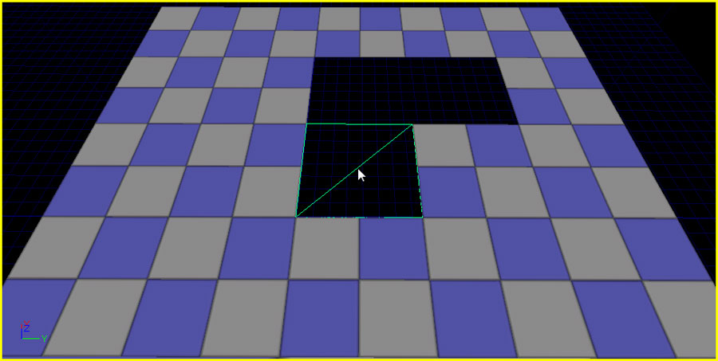
툴을 사용하면 커서 위치에 컴포넌트가 새로 추가됩니다: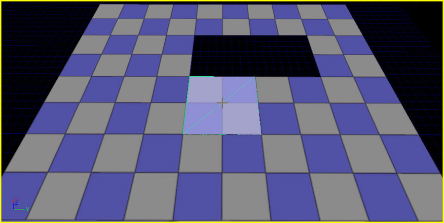
랜드스케이프 컴포넌트 삭제
 선택 툴로 선택된 컴포넌트에 삭제 동작을 하는 툴입니다:
선택 툴로 선택된 컴포넌트에 삭제 동작을 하는 툴입니다:
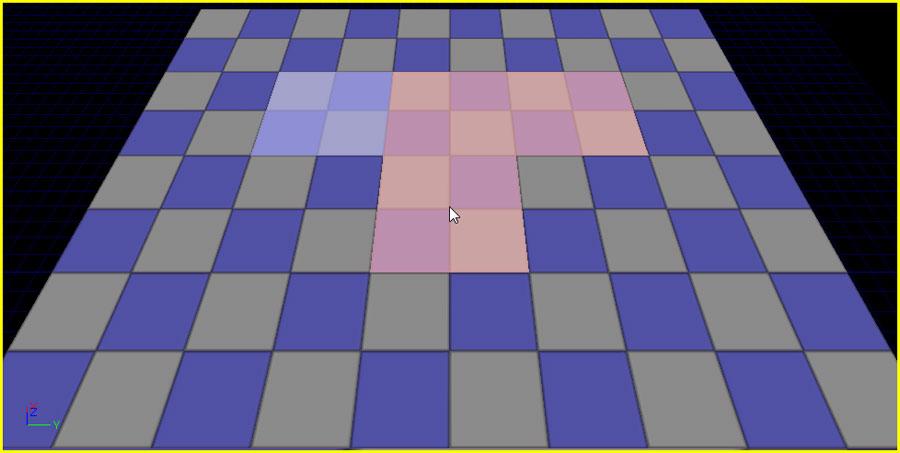
툴을 사용하여 선택된 컴포넌트를 제거합니다:
스트리밍 레벨로 이동
 이 툴은 선택 툴을 사용하여 선택된 컴포넌트를 현재 스트리밍 레벨로 옮깁니다. 랜드스케이프 섹션을 스트리밍 레벨로 옮겨 그 레벨과 함꼐 스트림 인/아웃 되도록 하여, 랜드스케이프 퍼포먼스를 최적화시킵니다.
스트리밍 레벨이 보이게 되면, 랜드스케이프는 모든 컴포넌트를 렌더합니다:
이 툴은 선택 툴을 사용하여 선택된 컴포넌트를 현재 스트리밍 레벨로 옮깁니다. 랜드스케이프 섹션을 스트리밍 레벨로 옮겨 그 레벨과 함꼐 스트림 인/아웃 되도록 하여, 랜드스케이프 퍼포먼스를 최적화시킵니다.
스트리밍 레벨이 보이게 되면, 랜드스케이프는 모든 컴포넌트를 렌더합니다:
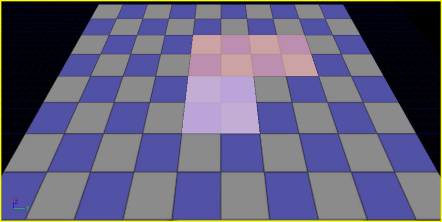
레벨의 표시여부를 (레벨 브라우저에서 해당 레벨의 버튼을 클릭하여) 토글시키면, 그 레벨에 있는 컴포넌트가 더이상 렌더되지 않게 만듭니다:
버튼을 클릭하여) 토글시키면, 그 레벨에 있는 컴포넌트가 더이상 렌더되지 않게 만듭니다:
 참고로 스트리밍 레벨을 사용하려는 경우, 맵 패키지가 아닌 .upk 패키지 파일 안에 LandscapeMaterial 을 저장해야 합니다. 그렇게 하지 못한 경우 레벨을 저장하려 할 때 크로스-레벨 리퍼런스 에러가 납니다.
참고로 스트리밍 레벨을 사용하려는 경우, 맵 패키지가 아닌 .upk 패키지 파일 안에 LandscapeMaterial 을 저장해야 합니다. 그렇게 하지 못한 경우 레벨을 저장하려 할 때 크로스-레벨 리퍼런스 에러가 납니다.
리전 툴
아래 (리전, Region) 툴은 랜드스케이프 특정 리전(구역)에 특정 동작을 하는 데 사용되는 툴입니다.리전 선택
이 툴은 현재 브러시 세팅을 사용하여 랜드스케이프 리전을 선택하고, 툴 세기를 사용하여 기즈모를 특정 영역에 맞추거나 한 기즈모에(서) 데이터를 복사하(붙여넣)기 위한 마스크로 쓸 수도 있습니다.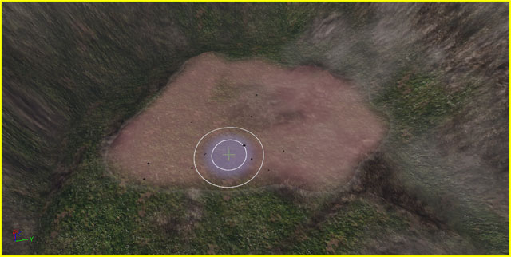
| 콘트롤 | 작업 |
|---|---|
| Ctrl + 좌클릭 | 선택된 리전에 추가합니다. |
| Ctrl + Shift + 좌클릭 | 선택된 리전에서 제거합니다. |
| 옵션 | 설명 |
|---|---|
| Total Strength 총 세기 | 각 브러시 스트로크마다 이펙트를 얼마나 줄 것인가 입니다. |
- Clear Region Selection 리전 선택 비우기
- 현재 선택된 리전을 비웁니다.
- Use Region as Mask 리전을 마스크로 사용하기
- 켜면 선택된 리전은 그 부분이 활성 영역이 되는 마스크로 작용합니다.

- Negative Mask 음각 마스크
- 이 옵션과 Use Region as Mask 옵션도 켜져 있으면, 리전 선택은 마스크처럼 작용하나 활성 영역은 선택되지 않은 리전이 됩니다.

리전 복사/붙여넣기
 랜드스케이프 기즈모 를 통해 랜드스케이프의 한 영역에서 다른 영역으로 높이 데이터를 복사할 수 있는 툴입니다.
랜드스케이프 기즈모 를 통해 랜드스케이프의 한 영역에서 다른 영역으로 높이 데이터를 복사할 수 있는 툴입니다.
- Copy Data to Gizmo 데이터를 기즈모로 복사
- 기즈모 바운드 안에 있는 데이터를, 선택된 리전에서의 마스크를 계산에 넣고서, 기즈모로 복사합니다.
- Fit Gizmo to Selected Regions 기즈모를 선택된 리전에 맞추기
- 기즈모가 모든 리전 선택을 완전히 덮도록 위치와 크기를 조정합니다. $ Fit Height Values to Gizmo Size 높이 값을 기즈모 크기에 맞추기 : $ Clear Gizmo Data 기즈모 데이터 비우기 :
브러시
- Brush Size 브러시 크기
- 언리얼 유닛으로 감쇠를 포함한 브러시 크기를 결정합니다. 이 범위 내라면 브러시는 최소한 어떤 효과든 냅니다.
- Brush Falloff 브러시 감쇠
- 브러시의 총 규모 중 어느 부분에서부터 감쇠를 시작시킬지 정합니다. 본질적으로는 브러시의 가장자리가 얼마나 딱 끊어지나(hard)를 말합니다. 감쇠가 0.0 이면 브러시 가장자리까지 온전한 효과가 적용되어 딱 끊어진다는 뜻입니다. 감쇠가 1.0 이면 브러시 중앙에만 온전한 효과를 내며, 가장자리에 이르기까지 지속적으로 감쇠됩니다.

서클 브러시
서클 브러시는 현재 브러시가 단순히 원형이 되도록 하는 것입니다.
서클 브러시 감쇠 유형
현재 선택된 브러시 아이콘을 클릭하면 감쇠 유형을 선택할 수 있는 메뉴가 내리펼쳐집니다.  | Smooth (스무드) | 감쇠가 시작되고 끝나는 지점의 에지를 부드럽게 만들어 주는 선형 감쇠입니다. |
 | Linear(선형) | 각진 선형 감쇠입니다. |
 | Sphere(구형) | 부드럽게 시작해서 각지게 끝나는 반원형 감쇠입니다. |
| Tip(뾰족) | 급작스럽게 시작해서 부드러운 반원형으로 끝나는, 구체형에 반대되는 감쇠입니다. |
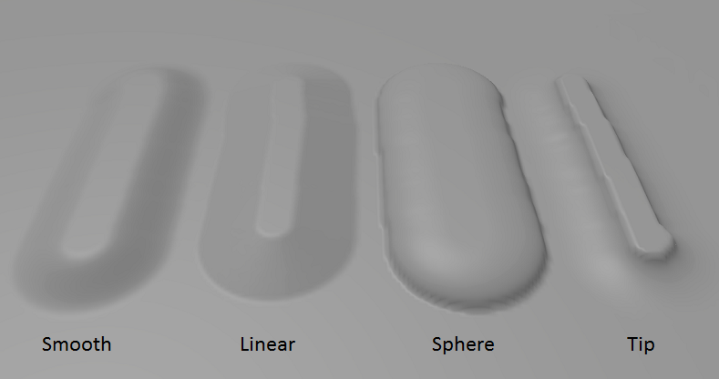
패턴 브러시
 패턴 브러시는 텍스처에서 컬러 채널 하나를 샘플로 뽑아 브러시에 모양을 멋대로 지정하여 알파로 사용할 수 있는 브러시입니다. 브러시로 칠하는 부분에 따라 텍스처 패턴이 타일링됩니다.
예를 들어 아래와 같은 텍스처를 알파로 사용할 수 있습니다:
패턴 브러시는 텍스처에서 컬러 채널 하나를 샘플로 뽑아 브러시에 모양을 멋대로 지정하여 알파로 사용할 수 있는 브러시입니다. 브러시로 칠하는 부분에 따라 텍스처 패턴이 타일링됩니다.
예를 들어 아래와 같은 텍스처를 알파로 사용할 수 있습니다:

 브러시 모양 결과는 다음과 같습니다:
브러시 모양 결과는 다음과 같습니다:
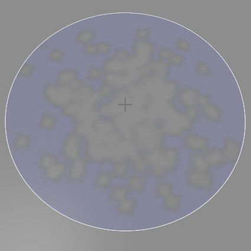


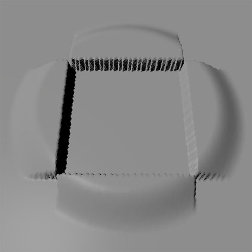
알파 브러시
패턴 브러시 아이콘에 클릭하면 펼쳐지는 드롭다운 메뉴를 통해 알파 브러시를 선택할 수 있습니다. 알파 브러시는 패턴 브러시와 비슷하지만, 칠하는 부분에 맞춰 텍스처를 타일링할 때 브러시 텍스처의 방향을 그리는 방향으로 맞추며, 커서의 움직임에 따라 모양을 잡아끕니다.
알파 브러시는 패턴 브러시와 비슷하지만, 칠하는 부분에 맞춰 텍스처를 타일링할 때 브러시 텍스처의 방향을 그리는 방향으로 맞추며, 커서의 움직임에 따라 모양을 잡아끕니다.
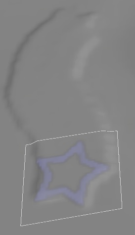
알파 / 패턴 브러시 세팅
| 세팅 | 설명 |
|---|---|
Use Texture  | R,G,B,A 버튼을 누르면 알파 브러시 내용을 콘텐츠 브라우저에 현재 선택되어 있는 텍스처의 해당 채널 데이터로 설정합니다. 오른편에는 알파 브러시 미리보기 입니다. 미리보기 이미지를 클릭하면 현재 알파 브러시 소스 텍스처를 콘텐츠 브라우저에서 볼 수 있습니다. |
| Texture Scale (패턴 브러시 전용) | 랜드스케이프 표면에 대한 샘플 텍스처의 크기를 설정합니다. 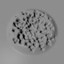  |
| Texture Rotation (패턴 브러시 전용) | 랜드스케이프 표면에 대한 샘플 텍스처의 로테이션을 설정합니다.   |
| Texture Pan [U/V] (패턴 브러시 전용) | 랜드스케이프 표면상에 샘플 텍스처의 오프셋을 설정합니다.  |
컴포넌트 브러시
 컴포넌트 브러시는 개별 컴포넌트에 작업할 때 사용하는 브러시입니다. 커서는 한 번에 하나의 컴포넌트에만 제한됩니다.
개별 컴포넌트 단위로 작동하는 툴을 사용할 때 적합한 유일한 브러시입니다.
컴포넌트 브러시는 개별 컴포넌트에 작업할 때 사용하는 브러시입니다. 커서는 한 번에 하나의 컴포넌트에만 제한됩니다.
개별 컴포넌트 단위로 작동하는 툴을 사용할 때 적합한 유일한 브러시입니다.

기즈모 브러시
 기즈모 브러시는 랜드스케이프 기즈모 안에 포함된 데이터를 완전히 칠하는 데 사용됩니다. 랜드스케이프의 특정 영역에만 국한해서 일정한 작업을 할 수 있게 해 주는 툴입니다.
기즈모 브러시는 랜드스케이프 기즈모 안에 포함된 데이터를 완전히 칠하는 데 사용됩니다. 랜드스케이프의 특정 영역에만 국한해서 일정한 작업을 할 수 있게 해 주는 툴입니다.
 이 브러시는 리전 복사/붙여넣기 툴이 활성화되었을 때만 사용할 수 있습니다.
이 브러시는 리전 복사/붙여넣기 툴이 활성화되었을 때만 사용할 수 있습니다.


타겟
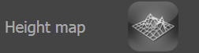
선택하여 포커스가 잡히면 타겟은 파랑으로 반전되어 나타납니다: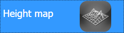
포커스가 다른 곳으로 이동하면 선택된 타겟은 하양으로 반전됩니다: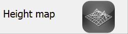
레이어
랜드스케이프 레이어는 랜드스케이프 터레인에 텍스처(나 머티리얼 네트워크)가 적용되는 방식을 결정합니다. 랜드스케이프는 다양한 텍스처, 스케일, 회전, 패닝으로 된 레이어를 여럿 블렌딩(혼합)하여 최종 텍스처를 입힌 터레인을 만들어 냅니다.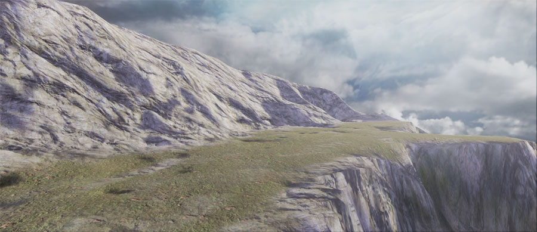
웨이트 편집하기
각 레이어는 렌드스케이프에 대해 얼마만큼의 영향력을 갖는지 나타내는 웨이트(가중치)가 있습니다. 레이어에는 딱 정해진 순서가 없습니다. 대신 각 레이어의 웨이트가 별도로 저장되는데, 전부 1.0 까지입니다. 레이어의 웨이트를 변경하려면, 페인트 툴을 사용하여 활성 레이어의 웨이트를 올리거나 내립니다. 언제 어느 레이어든 말입니다. 웨이트를 조절할 레이어를 선택하기만 한 다음 페인트 툴을 사용해 하이트맵을 칠하던 것과 같은 식으로 칠해주면 됩니다. 한 레이어의 웨이트를 올리면, 그 부분에 대한 다른 레이어의 웨이트는 균등하게 감소될 것입니다. 반대로 레이어를 칠해 빼낼(즉 Ctrl + Alt 를 누르고 칠할) 때, 어떤 레이어를 증가시켜 대체시킬지가 명확하지 않습니다. 현재 작동법은 다른 레이어의 웨이트를 균등하게 올려 맞추는 것입니다. 이러한 작동법 때문에 모든 레이어를 완전히 칠해 없앨 수는 없습니다. 레이어를 칠해 없애는 대신, 대체시킬 레이어를 선택하여 거기에 더하기식으로 칠해주는 방법을 추천합니다.랜드스케이프 머티리얼
레이어 칠하기는 Landscape 액터의 LandscapeMaterial 프로퍼티에서 활용하도록 지정하기 전까지는 효과가 없습니다.- 랜드스케이프 머티리얼 구성법에 대해서는 Landscape Materials KR 문서를 참고해 보시기 바랍니다.
편집 모드
랜드스케이프는 레이어가 없는 것이 디폴트입니다. Target Layers 부분의 Edit Mode 를 켜면 새 레이어를 추가시킬 수 있습니다. Edit 라디오 버튼을 클릭하면 편집 모드가 켜져 새 레이어를 추가할 수 있는 콘트롤 표시가 토글됩니다.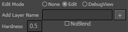
새 레이어를 추가하려면 Add Layer Name 텍스트 필드에 레이어 이름을 추가하고, 다른 프로퍼티를 원하는 대로 설정합니다:- Hardness
- TODO
- NoBlend
- TODO
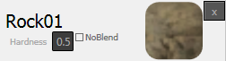
편집 모드에 있을 때, 위에서 보듯이 목록의 타겟에도 그 프로퍼티를 표시되며, 각 레이어의 Hardness 편집이 가능합니다.DebugView 모드
DebugView (디버그 뷰) 모드는 뷰포트의 랜드스케이프 위에 특정 레이어의 웨이트를 시각화시켜 보여줍니다. 디버그 뷰 모드가 켜지면, 목록의 타겟이 써진 개별 컬러 채널을 선택할 수 있는 라디오 버튼이 표시됩니다.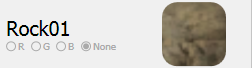
채널을 선택하면 선택된 타겟 채널이 덮는 영역 셰이더가 랜드스케이프에 적용됩니다.랜드스케이프 기즈모
Gizmo 프로퍼티
기즈모를 익스포트할 때 저장되는 프로퍼티가 있습니다.
- Width 폭
- 기즈모 액터의 기본 폭으로, 언리얼 유닛 단위입니다. X 축은 빨강 선으로 표시됩니다.
- Height 높이
- 기즈모 액터의 기본 높이로, 언리얼 유닛 단위입니다. Y 축은 초록 선으로 표시됩니다.
- LengthZ Z 길이
- 기즈모 액터의 기본 Z 길이로, 언리얼 유닛 단위입니다.
- MarginZ Z 마진
- 기즈모를 선택에 맞출 때, 최소 높이에서 최대 높이를 가지고 두는 여백에 대한 Z 값입니다. 기즈모를 선택된 리전에 맞출 때, Z 길이 = (최대 높이 - 최소 높이) + 2 * Z 마진 입니다.
- MinRelativeZ 최소 상대 Z
- 기즈모에 있는 데이터의 최소 높이 값입니다. 기즈모에 있는 높이 값은 0.f - 1.f 범위로 정규화되며, (값 - 최소 상대 Z) * 상대 스케일 Z 로 표시됩니다.
- RelativeScaleZ 상대 스케일 Z
- 기즈모에 있는 데이터의 높이 스케일 값입니다.
기즈모로 복사하기
랜드스케이프 일부분을 복사하기 위해서는, 그 영역에 대한 데이터를 기즈모로 복사해야 합니다. 그런 다음 그 데이터를 나중에 다른 위치로 붙여넣기 하면 됩니다. 선택된 리전을 복사하려면:- 리전 선택 툴을 선택합니다.
- 일반적인 페인팅 프로세스와 비슷하게 브러시 스트로크를 통해 랜드스케이프 리전을 선택합니다.
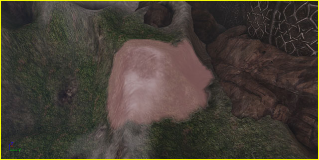
- 데이터를 복사할 때 선택된 부분이 마스크로 활용되도록 Use Region as Mask (리전을 마스크로 사용)을 체크합니다.

- Region Copy/Paste (리전 복사/붙여넣기) 툴을 선택합니다. 뷰포트에 기즈모가 보일 것입니다.

- Fit Gizmo to Selected Regions (기즈모를 선택된 리전에 맞추기) 버튼을 눌러 기즈모가 선택된 리전 전부를 덮도록 위치와 크기를 조절합니다.

- Copy Data to Gizmo (데이터를 기즈모로 복사) 버튼을 눌러 기즈모 범위 내 랜드스케이프의 선택된 리전에 대한 데이터를 전송합니다. Ctrl + C 를 눌러도 같은 기능을 합니다.
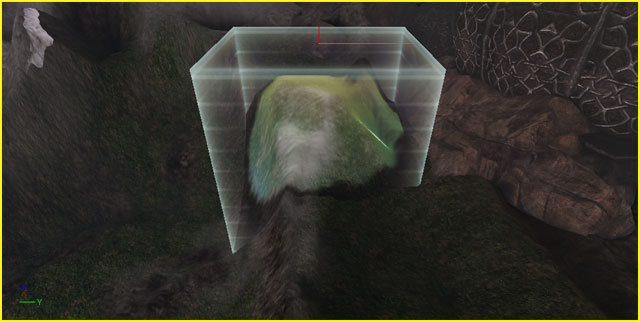
- Region Copy/Paste (리전 복사/붙여넣기) 툴을 선택합니다. 기즈모가 뷰포트에 보일 것입니다.
- 기즈모를 클릭하여 선택합니다. 트랜스폼 위젯이 나타납니다.
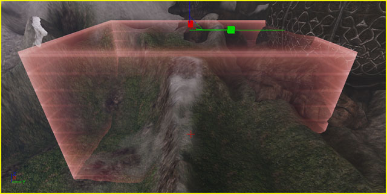
- 기즈모를 옮기고 돌리고 늘려 복사하려는 랜드스케이프를 덮도록 합니다.
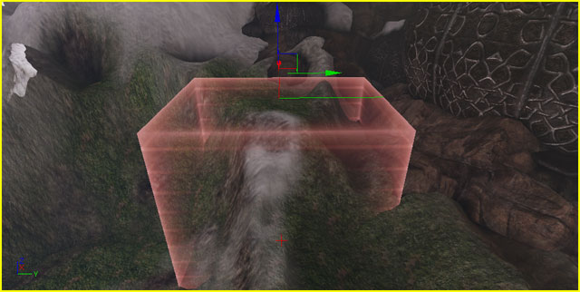
- Copy Data to Gizmo (기즈모로 데이터를 복사) 버튼을 눌러 기즈모 범위 내 랜드스케이프 부분에 해당하는 데이터를 전송합니다. Ctrl + C 를 눌러도 같은 기능을 합니다.
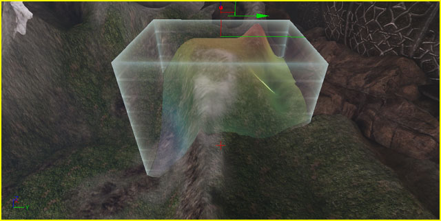
기즈모에서 붙여넣기
기즈모에서 데이터를 붙여넣으면 랜드스케이프 일부를 한 위치에서 다른 위치로 전송하는 것이 가능합니다. 데이터를 완전히 붙여 동일한 모양을 낼 수도 있고, 브러시 스트로크와 세기 세팅을 사용하여 새 위치에 칠해 일부만 전송할 수도 있습니다. 기즈모에서 데이터를 붙여넣기 전에 먼저 기즈모로 데이터를 복사해야 합니다. 기즈모 데이터를 붙여넣으려면:
기즈모 데이터를 붙여넣으려면:
- 데이터가 들어있는 기즈모를 옮기고 돌리고 늘려 데이터를 붙이려는 영역을 덮도록 합니다.
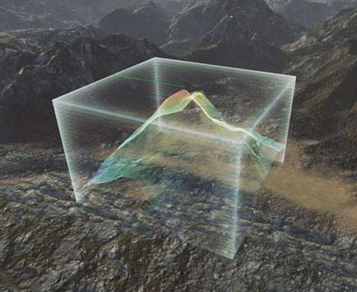
- 기즈모에서 데이터를 "칠해" 넣으려면 사용가능한 (원, 패턴, 알파, 기즈모) 브러시 중 하나를 사용하여 데이터를 붙여넣습니다.
- 기즈모 브러시는 기즈모의 데이터를 완전히 붙여넣는 데 사용됩니다. Ctrl + V 를 눌러도 기즈모의 데이터를 완전히 붙여넣습니다.
- 다른 브러시는 현재 브러시 크기와 세기를 사용하여 기즈모의 데이터를 칠하는 데 사용할 수 있습니다.

Region Selection (리전 선택) 툴을 사용하여 선택된 리전이 있고, Use Region as Mask (리전을 마스크로 사용) 옵션이 켜져 있다면, 붙여넣은 데이터는 마스크 리전에 걸러서 적용됩니다.
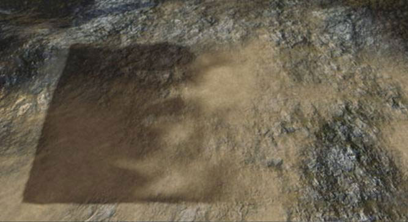

기즈모 데이터 임포트/익스포트
하이트맵 데이터는 랜드스케이프 편집 창의 *Import/Export to Gizmo*(기즈모로 임포트/익스포트) 부분을 통해 기즈모 로/에서 임포트/익스포트 가능합니다. 데이터를 기즈모로 임포트하려면:
데이터를 기즈모로 임포트하려면:
- 파일 찾기 (...) 버튼(
 ) 을 클릭하고 기즈모로 임포트하려는 하이트맵 (16-비트 raw) 파일을 선택합니다. 하이트맵 파일명과 크기 칸이 채워집니다.
) 을 클릭하고 기즈모로 임포트하려는 하이트맵 (16-비트 raw) 파일을 선택합니다. 하이트맵 파일명과 크기 칸이 채워집니다.
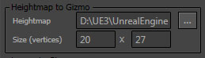
 주: 임포트 프로세스에서는 raw 파일 포맷을 사용하기에, 이미지 X Y 크기를 자동으로 알 수 없습니다. 그저 잘 찍는 수밖에 없으니, 하이트맵을 제대로 임포트하려면 각 크기를 수동으로 바꿔줘야 할 수도 있습니다.
주: 임포트 프로세스에서는 raw 파일 포맷을 사용하기에, 이미지 X Y 크기를 자동으로 알 수 없습니다. 그저 잘 찍는 수밖에 없으니, 하이트맵을 제대로 임포트하려면 각 크기를 수동으로 바꿔줘야 할 수도 있습니다.
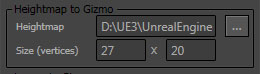
- 레이어 웨이트 정보도 임포트하려면, Add Layer (레이어 추가,
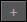
) 버튼을 눌러 원하는 만큼 레이어를 추가시키면 됩니다.
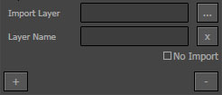
- 각 레이어에 대해 임포트할 레이어 웨이트맵 (8-비트 raw) 파일을 선택합니다. 파일과 레이어 이름이 채워집니다. 레이어 이름은 디폴트로 파일 이름을 사용합니다. 필요에 따라 레이어 이름을 바꾸십시오. No Import 체크박스를 켜면 개별적인 레이어 정보가 임포트되지 않습니다.
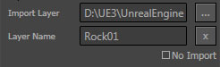
- 하이트맵과 레이어가 선택하고서 Import to Gizmo (기즈모로 임포트) 버튼을 눌러 기즈모로 데이터를 임포트합니다.
크기가 맞지 않으면 이렇게 보일 수도 있습니다:
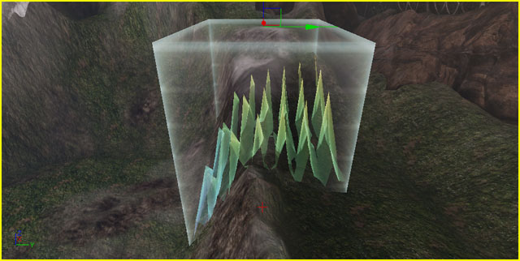
크기를 바꾸고 리임포트하면 결과가 제대로 나옵니다. 크기가 맞다면 기즈모에 데이터가 제대로 표시될 것입니다.

- 기즈모에 데이터를 채운 상태로 (기즈모로 데이터 복사하기 참고), Export Gizmo Data (기즈모 데이터 익스포트) 버튼을 누르면 기즈모 데이터를 파일로 익스포트할 수 있습니다. Export Layers 체크박스를 켜면 레이어 웨이트 데이터도 파일로 익스포트합니다.
- 하이트맵 파일 위치와 이름을 선택합니다.

- 레이어를 익스포트한다면 각 레이어에 대한 위치와 파일명을 선택합니다.

기즈모 리스트
 기즈모 리스트에는 나중에 쉽게 재사용 가능하도록 저장된 기즈모 목록이 표시됩니다.
기즈모 리스트에는 나중에 쉽게 재사용 가능하도록 저장된 기즈모 목록이 표시됩니다.
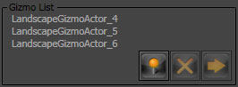
| 콘트롤 | 설명 |
|---|---|
 | 목록에 기즈모의 현재 위치, 크기, 로테이션을 저장합니다. |
| 목록에 현재 선택되어 있는 기즈모를 제거합니다. | |
| 기즈모의 위치, 크기, 로테이션을 목록에 현재 선택되어 있는 기즈모의 것으로 설정합니다. |